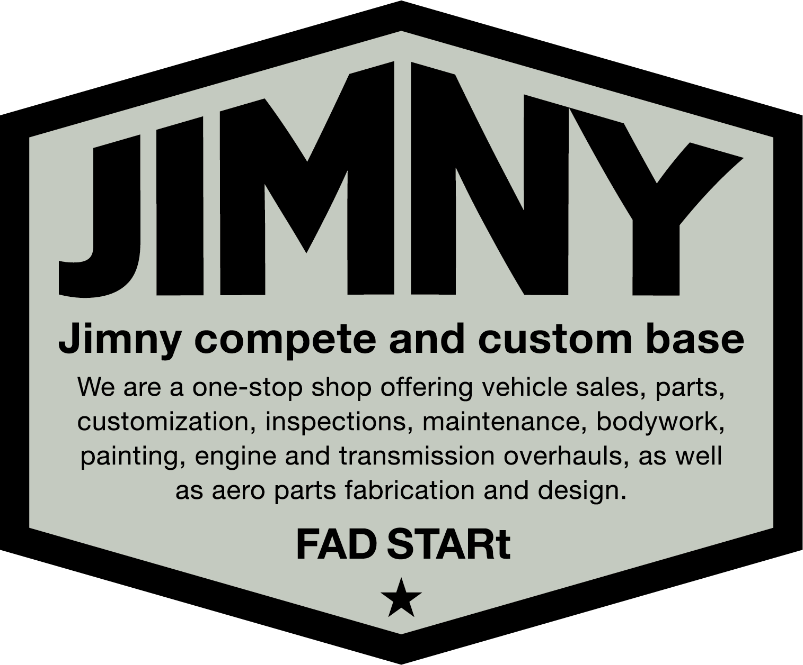
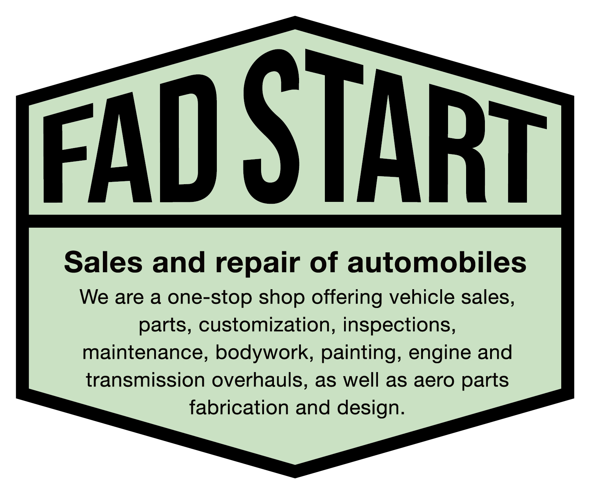
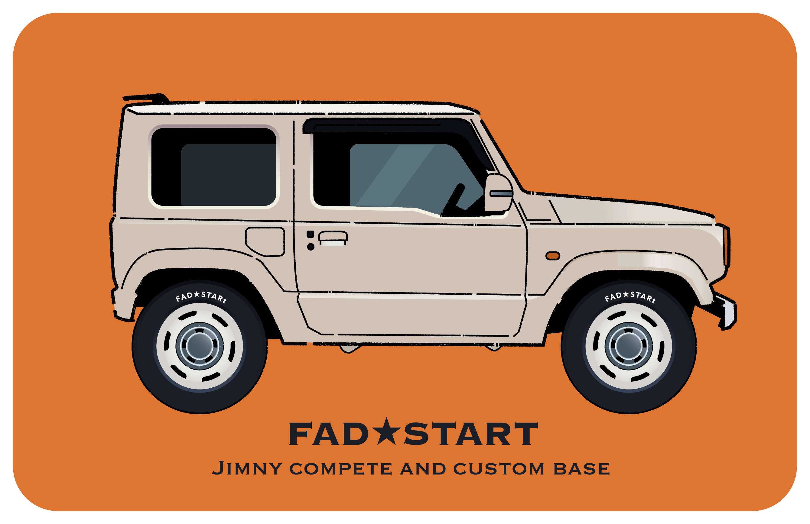
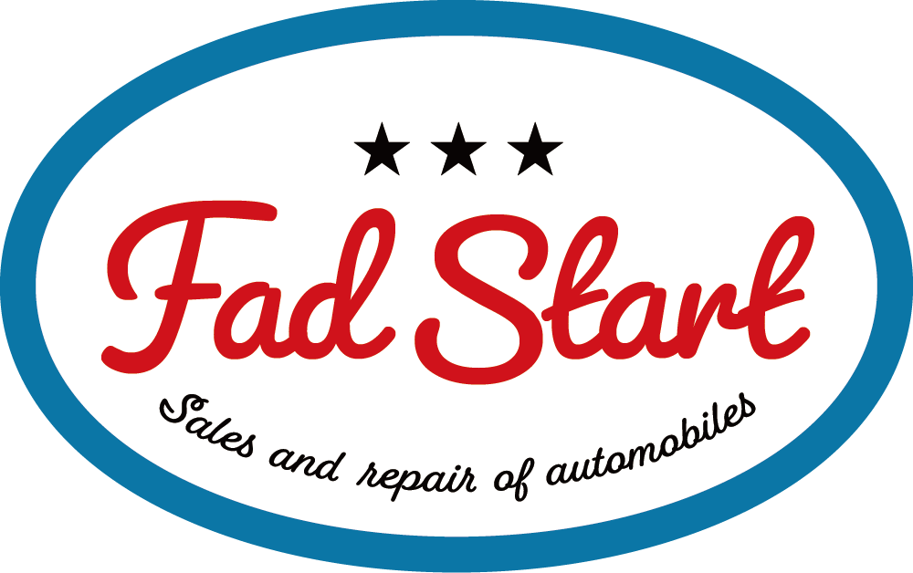

WORKS
FAD STARt
ステッカー/イラスト/キャラクターデザイン
DTP
illust
2024-
ジャズと喫茶franny様での制作物を見て、ステッカーデザインのご依頼をいただきました。
Jimnyのリペアやカスタムなどを行っている自動車整備工場で、デモ車の資料を頂いてイラストを描き起こしました。
ポップ、アメリカン、ビンテージ、モダン、標識風など様々なテイストのデザイン案から相談と調整を重ねて選んでいただきました。追加でキャラクターデザインの依頼を頂き、鋭意制作中です。



